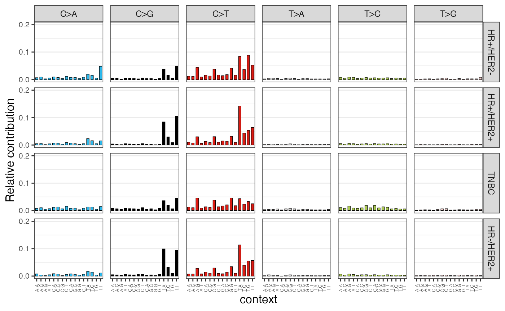

Welcome to cancereffectsizeR! This tutorial walks you through some of the package’s key features to analyze publicly-available tumor sequencing data. We recommend that you start a fresh R/RStudio session. You can follow along by copy-and-pasting code into an R script.
Installation and quickstart
If you haven’t installed the package yet, or if it’s been a while, install the latest release:
# Some dependencies are large, so we increase the download time limit to be safe
options(timeout = 600)
install.packages("remotes")
remotes::install_github("Townsend-Lab-Yale/cancereffectsizeR@*release", dependencies = TRUE)Regrettably, there is a bug in some older versions of the GenomeInfoDb package that may produce cryptic error messages in cancereffectsizeR, along the lines of !anyNA(m32) is not TRUE. If you encounter this issue, the simplest solution is to update your Bioconductor version:
# Only necessary if the current Bioconductor version is <3.14.
if (BiocManager::version() < as.package_version("3.14")) {
BiocManager::install(version = "3.14")
}In addition to installing cancereffectsizeR, you need to install a reference data set, or refset. These refsets include genomic and gene annotations, mutational signature definitions, and more. Currently, refsets supporting the hg38 and hg19 builds of the human genome are available as separate data packages. (If you want to build your own refset to use a custom genome build or gene set for almost any species, you can.) For this tutorial, we’ll use the hg38 refset package.
options(timeout = 600)
remotes::install_github("Townsend-Lab-Yale/ces.refset.hg38@*release")Before continuing, you may want to create a directory for this tutorial to store all the data and output in one place.
# setwd() somewhere, if desired
dir.create("CES_tutorial")
setwd("CES_tutorial")Quickstart
If you want to skip all the details and run through a no-frills cancereffectsizeR analysis now, see below. Otherwise, take a peek to get a sense of what’s to come, or keep reading for a more thorough walkthrough.(Show/hide quickstart)
library(cancereffectsizeR)
library(data.table)
library(ggplot2)
# Download lung adenocarcinoma (LUAD) somatic variant data.
# Note that the rest of the tutorial uses BRCA, not LUAD.
tcga_maf_file <- "inst/tutorial/TCGA.LUAD.mutect.0458c57f-316c-4a7c-9294-ccd11c97c2f9.DR-10.0.somatic.maf.gz"
if (!file.exists(tcga_maf_file)) {
download.file("https://api.gdc.cancer.gov/data/0458c57f-316c-4a7c-9294-ccd11c97c2f9",
destfile = tcga_maf_file
)
}
# Prepare data and filter out a few likely germline/false-positive calls
maf <- preload_maf(maf = tcga_maf_file, refset = "ces.refset.hg38")
maf <- maf[germline_variant_site == F][repetitive_region == F | cosmic_site_tier %in% 1:3]
# Create cancereffectsizeR analysis and load data
cesa <- CESAnalysis(refset = "ces.refset.hg38")
cesa <- load_maf(cesa = cesa, maf = maf)
# Infer trinculeotide-context-specific relative rates of SNV mutation from
# a mutational signature analysis (leaving out signatures not found in LUAD)
signature_exclusions <- suggest_cosmic_signature_exclusions(cancer_type = "LUAD", treatment_naive = TRUE)
cesa <- trinuc_mutation_rates(
cesa = cesa, signature_set = ces.refset.hg38$signatures$COSMIC_v3.2,
signature_exclusions = signature_exclusions
)
# Estimate neutral gene mutation rates using dNdScv, with tissue-specific mutation rate covariates.
cesa <- gene_mutation_rates(cesa, covariates = ces.refset.hg38$covariates$lung)
# Infer scaled selection coefficients under the default model of clonal selection.
# By default, inference is restricted to recurrent mutations.
cesa <- ces_variant(cesa)
# Copy output, merge in variant annotations, and view top variants
selection <- cesa$selection[[1]]
selection <- selection[cesa$variants, on = "variant_id", nomatch = NULL]
# Take top 15 variants, then sort lowest to highest (to plot left to right)
top <- selection[order(-selection_intensity)][1:15]
top <- top[order(selection_intensity)]
# Plot top effects
top[, display_name := gsub("_", "\n", variant_name)]
top[, display_levels := factor(display_name, levels = display_name, ordered = T)]
plot_title <- "Top cancer effects in TCGA LUAD"
breaks <- unique(as.numeric(round(quantile(top$included_with_variant))))
ggplot(top, aes(x = display_levels, y = selection_intensity)) +
geom_errorbar(aes(ymin = ci_low_95, ymax = ci_high_95), width = .2, color = "darkgrey") +
geom_point(aes(color = included_with_variant), size = 3) +
scale_x_discrete() +
scale_y_log10() +
scale_color_viridis_c(
name = "variant prevalence", guide = "colorbar", trans = "log10",
option = "plasma", breaks = breaks
) +
xlab(element_blank()) +
ylab(expression("cancer effect" ~ scriptstyle(~ ~ (log[10])))) +
ggtitle(plot_title) +
guides(color = guide_colourbar(ticks = FALSE)) +
theme_minimal() +
theme(
text = element_text(family = "Verdana"),
axis.title.x = element_text(size = 14),
axis.text.x = element_text(size = 8),
legend.position = "bottom",
legend.title = element_text(size = 10),
panel.grid.major.x = element_blank(),
panel.grid.minor.x = element_blank()
)
# There's lots more that can be done with cancereffectsizeR! See the full tutorial for some
# important details and a broader view of functionality.
Preparing data
Load cancereffectsizeR, as well as the data.table package. cancereffectsizeR makes extensive use of data tables, so it’s handy to have the package loaded.
For this tutorial, we’ll use somatic variant data produced from exome sequencing by the TCGA BRCA (breast carcinoma) project. We will supplement this with targeted sequencing data from the Metastatic Breast Cancer data set hosted at cBioPortal. (We stop at two data sources for brevity; for the best possible analysis of somatic selection, we would want to include as many data sources as we could find.)
In cancereffectsizeR, data can be combined from multiple whole-exome, whole-genome, and targeted sequencing sources, although we always need at least one source of whole-exome or whole-genome data to anchor the analysis. Targeted sequencing data can’t be used for mutation rate inference: there are too few mutations, typically, and since they’re mostly in cancer hotspots, they don’t provide a baseline of what mutation rates are like in the absence of selection. Instead, mutation rates in TGS samples will be assumed to be similar to those calculated in WXS/WGS samples.
TCGA data (whole-exome)
We’ll begin by downloading variant data from TCGA. The data comes in a large text file listing somatic mutations for a collection of tumors, in accordance with MAF format.
tcga_maf_file <- "TCGA.BRCA.mutect.995c0111-d90b-4140-bee7-3845436c3b42.DR-10.0.somatic.maf.gz"
if (!file.exists(tcga_maf_file)) {
download.file("https://api.gdc.cancer.gov/data/995c0111-d90b-4140-bee7-3845436c3b42", destfile = tcga_maf_file)
}Let’s also load and examine a table of patient information. Although the TCGA samples in the data set are all taken from primary tumors, you’ll see that some patients presented with metastatic disease (pM = M1). Hormone receptor status (progesterone or estrogen receptor positive) and HER2 amplification status are also recorded in a combined column.
tcga_clinical <- fread(system.file("tutorial/TCGA_BRCA_clinical.txt", package = "cancereffectsizeR"))
tcga_clinical[1:5]## patient_id pM receptor_status
## 1: TCGA-3C-AAAU <NA> HR+/HER2-
## 2: TCGA-3C-AALI M0 HR+/HER2+
## 3: TCGA-3C-AALJ M0 <NA>
## 4: TCGA-3C-AALK M0 HR+/HER2+
## 5: TCGA-4H-AAAK M0 <NA>The preload_maf() function takes in MAF data, finds the columns needed by cancereffectsizeR, adds a couple of genomic annotations, and checks for common problems. Since TCGA data sets are well-curated, this particular run will not reveal any problems. This MAF file already uses the hg38 genome build, but if it didn’t, we could use the chain_file argument to convert records via liftOver.
tcga_maf <- preload_maf(maf = tcga_maf_file, refset = "ces.refset.hg38")If you compare the TCGA MAF and clinical file, you’ll see we have a small problem: the clinical file uses patient IDs, while the MAF uses tissue sample IDs. (This column was originally called Tumor_Sample_Barcode, but preload_maf() changed it to Unique_Patient_Identifier. cancereffectsizeR uses this column name to emphasize that all MAF samples must derive from distinct patients.)
Luckily, TCGA IDs are easy to convert. After verifying that each TCGA patient has just one sample in the MAF data, we’ll change tissue IDs to patient IDs.
# TCGA sample IDs start with the patient ID, luckily. Here, we verify a 1-1 sample-patient
# relationship. If this check failed, we would need to figure out a sample exclusion
# strategy before proceeding with analysis.
tcga_maf[, patient_id := substr(Unique_Patient_Identifier, 1, 12)]
uniqueN(tcga_maf[, .(patient_id, Unique_Patient_Identifier)]) == uniqueN(tcga_maf$Unique_Patient_Identifier)
# We can now use patient_id as the unique identifier.
tcga_maf[, Unique_Patient_Identifier := patient_id]
tcga_maf[, patient_id := NULL] # remove redundant column
setnames(tcga_clinical, "patient_id", "Unique_Patient_Identifier")Metastatic data (TGS)
Our TGS data source (hosted on cBioPortal and recently published in Cancer Discovery), consists of metastatic tumors that were sequenced using various MSK-Impact panels. In the full data set, some patients have multiple samples sequenced; the data provided with the package has been subsetted to one sample per patient, and the genome build has been converted to hg38.
tgs_maf_file <- system.file("tutorial/metastatic_breast_2021_hg38.maf", package = "cancereffectsizeR")
tgs_maf <- preload_maf(maf = maf_file, refset = ces.refset.hg38)Pre-analysis variant filtering
(Show/hide justification)
Since our goal is to quantify somatic selection, we want the MAF data to represent a complete set of high-confidence somatic variants from the samples. It’s probably unwise to go too far down the rabbithole of second-guessing the variant calling methods used in the data sources. However, there is some simple filtering that we often use to bring the data into alignment with these tenets:
- There should be few to no mutations at sites where population databases show common germline variation.
- There should be few to no mutations in repetitive or poorly mapped regions of the genome, as mutations in these sites are difficult to sequence confidently, and they should be rare anyway since these regions are usually not functionally important at the small-variant level.
- Samples should have little mutational overlap, especially at sites without known cancer association.
When using ces.refset.hg38 (hg38), the preloaded MAF has three relevant annotation columns:
- germline_variant_site: The variant overlaps a region that contains a common germline variant according to gnomAD (common being >1% prevalence in some population).
- repetitive_region: The variant is in a region of the genome marked as repetitive by the RepeatMasker tool.
- cosmic_site_tier: Indicates if the variant overlaps a site annotated as cancer-related (tiers 1, 2, and 3) by COSMIC.
We suggest filtering out all germline site records, as well as records from repetitive regions except for the few with COSMIC annotations. We can apply this filtering like this:
tcga_maf <- tcga_maf[germline_variant_site == F]
tcga_maf <- tcga_maf[repetitive_region == F | cosmic_site_tier %in% 1:3]We don’t apply these filters to TGS data, since it tends to be high-depth sequencing of cancer hotspots.
When combining data sources, or using data from projects that sequenced multiple samples per patient, it’s important to verify that only one sample per patient is included in your MAF (and in your downstream cancereffectsizeR analysis), since samples from the same patient likely did not evolve independently. Since it’s often hard to be sure that there isn’t re-use of samples across different data sources, we recommend both careful manual curation and the use of check_sample_overlap() to catch unexpected sample duplication. (If you try it on tcga_maf and tgs_maf, you’ll see that our data passes this check.)
What not to filter
To get a complete picture of the mutational processes present in tissues, whole-exome/whole-genome variants should not be filtered on any sort of functional criteria. One thing to watch out for: Occasionally, researchers will leave out synonymous variants when publishing their study data. As synonymous variants are essential for calculating gene mutation rates, the synonymous variants should be tracked down before using the data.
Since TGS data is not used to infer mutation rates, it’s okay to filter TGS data to regions of interest. We are actually about to do this! We will have to take care to accurately report the coverage of the filtered data in the next step.
Create CESAnalysis and load data
The CESAnalysis is the primary data structure of cancereffectsizeR. The cancereffectsizeR workflow consists of calling a series of functions that take a CESAnalysis as input and return an altered CESAnalysis. Re-using the same variable name will keep things tidy.
Load WXS data
Let’s create a CESAnalysis and call load_maf() to load the TCGA data.
cesa <- CESAnalysis(refset = "ces.refset.hg38")
cesa <- load_maf(cesa = cesa, maf = tcga_maf)You will see a message that some variants fall outside of the refset’s exome definitions. Since we don’t know exactly what exome capture techniques were used for the BRCA project (probably different methods at different study sites), this isn’t unexpected. (On the off chance that you do know the exact exome capture intervals of whatever data you’re using, you should supply those intervals with load_maf()’s covered_regions argument. For WGS data, simply set coverage = "genome". We’ll discuss how to load TGS data shortly.)
To navigate a CESAnalysis, use the dollar sign ($). We can use these accessors to look at the MAF data as well more detailed variant annotations, and if we want we can perform various filtering operations, such as identifying the most prevalent variants in the loaded data.
cesa$maf
cesa$variants
cesa$samples
# Let's see the top variants
(top_variants <- cesa$variants[order(-maf_prevalence)][1:10, .(variant_name, chr, start, end, maf_prevalence)])Let’s load the clinical data into the analysis, too.
cesa <- load_sample_data(cesa, tcga_clinical)Now that we’ve loaded the sample data, we can, for example, see how variant counts break down across different sample groups. Let’s see a breakdown PIK3CA mutation status by BRCA receptor phenotype.
# Get samples with 1 or more PIK3CA mutation
samples_with_pik3ca <- cesa$maf[top_gene == "PIK3CA", unique(Unique_Patient_Identifier)]
pik3ca_sample_counts <- cesa$samples[samples_with_pik3ca, .(with_PIK3CA = .N),
by = "receptor_status", on = "Unique_Patient_Identifier"
]
total_sample_counts <- cesa$samples[, .N, by = "receptor_status"]
combined_counts <- merge.data.table(pik3ca_sample_counts, total_sample_counts, by = "receptor_status")
combined_counts[, freq := with_PIK3CA / N]
combined_countsPIK3CA mutation is least prevalent in triple negative breast cancer.
Load TGS data
To load our TGS data, we need to be able to define its coverage. Why? To estimate the selection of a mutation, we need to know which samples have the mutation, which samples do not, and which are unknown due to lack of sequencing coverage. Our TGS samples were sequenced with multiple panels covering different genes, and unfortunately, the exact coverage (defined by genomic coordinates) is not publicly available for all of these. Therefore, for simplicity, we will filter the TGS data to mutations at a handful of top cancer genes that are covered in all of the panels. When we load the data, all records outside of these genes will be excluded, leaving us with greater power to infer selection in these genes without impacting our estimates outside these genes, which will use just the TCGA data. (As mentioned earlier, we shouldn’t filter WXS/WGS data this way, since it would interfere with mutation rate calculation, but TGS samples are not involved in mutation rate calculation.)
# Define coverage using the coding regions of these genes, as defined by the refset
top_tgs_genes <- c(
"TP53", "PIK3CA", "ESR1", "CDH1", "GATA3", "KMT2C",
"MAP3K1", "AKT1", "ARID1A", "FOXA1", "TBX3", "PTEN"
)
tgs_coverage <- ces.refset.hg38$gr_genes[ces.refset.hg38$gr_genes$gene %in% top_tgs_genes]We don’t have a clinical file for the TGS data, but we do know that they’re all metastatic samples. Instead of creating another table and calling load_sample_data(), we can use the sample_data_cols feature of load_maf():
tgs_maf$pM <- "M1"
cesa <- load_maf(cesa,
maf = tgs_maf, sample_data_cols = "pM",
coverage = "targeted", covered_regions = tgs_coverage, covered_regions_name = "top_genes"
)Now that all the data is loaded, we’ll show one data-wrangling example: Let’s look at variant prevalence by metastatic disease status. By default, the variant_counts() function considers all mutations, but we’ll subset to recurrent mutations.
counts_by_M <- variant_counts(
cesa = cesa, variant_ids = cesa$variants[maf_prevalence > 1, variant_id],
by = "pM"
)
counts_by_M[M1_prevalence > 0][order(-M1_prevalence)]Mutational processes and relative mutation rates
For each (exome) sample in our data set, trinuc_mutation_rates() will perform mutational signature extraction in order to to attribute each sample’s set of SNVs to a linear combination of mutational processes. By default, the signature extraction is done using the MutationalPatterns package, and deconstructSigs is also supported. The signature attribution allows us to infer sample-specific relative rates of SNV mutation for all trinucleotide contexts. TGS samples will be assumed to have mutational processes matching the group-average mutational processes of the exome data. (This isn’t optimal, since the metastatic samples may be affected by mutational processes, such as chemotherapy, that are lacking in the primary tumor exome data, but it might be the best we can do without finding another data source.)
We will use signature definitions from the refset (it’s also possible to create your own). To improve the accuracy of signature extraction, we will exclude signatures that can safely be presumed absent from the samples; a helper function, suggest_cosmic_signature_exclusions(), can provide some guidance.
# We'll use all suggested exclusions (TCGA primary tumors are treatment-naive)
signature_exclusions <- suggest_cosmic_signature_exclusions(cancer_type = "BRCA", treatment_naive = TRUE)
cesa <- trinuc_mutation_rates(cesa,
signature_set = ces.refset.hg38$signatures$COSMIC_v3.2,
signature_exclusions = signature_exclusions
)The trinuc_mutation_rates() run has added some useful information to the CESAnalysis: * snv_counts: A matrix of SNV counts by trinucleotide context. (You can also generate such a matrix from MAF data with trinuc_snv_counts().) * raw_attributions: Signature attributions as generated by the extractor. For MutationalPatterns, this matrix contains the number of mutations attributed to signature for each sample. Naturally, samples with more mutations will tend to have higher raw attributions. * biological_weights: The proportion of mutations attributed to each biologically-associated signature within each sample. Mutations attributed to signatures associated with sequencing/processing artifacts are left out. (Technical detail: Due to the instability of signature attributions on samples with few mutations, Samples with few MAF variants have their weights adjusted towards group-average weights, as indicated in the group_avg_blended column. If you want to make claims about subgroup differences in mutational processes, consider leaving these samples out or using the raw attributions. You should also leave out the TGS samples, which in this analysis are treated as having 0 mutations.) * trinuc_rates: Inferred relative rates of mutation, produced by matrix-multiplying biological_weights and signature definitions. (These rates will not equal the empirical rates seen in the data.)
While we’re here, MutationalPatterns has some nice plot functions that we can use. For example, we can plot the mean SNV profile for each BRCA receptor subtype. (We would not want to include TGS samples in this plot since cancer hotspot mutations are not reflective of overall mutational processes, but since our TGS samples lack receptor_status information, they will be left out without having to specifically exclude them.)
snv_counts <- cesa$mutational_signatures$snv_counts
# Counts look like this:
snv_counts[1:5, 1:5]##
## trinuc_snv P-0000015 P-0000075 P-0000102 P-0000120 P-0000155
## A[C>A]A 0 0 0 0 0
## A[C>A]C 0 0 0 0 0
## A[C>A]G 0 0 0 0 0
## A[C>A]T 0 0 0 0 0
## C[C>A]A 0 0 0 0 0
# We'll sum up the counts by group
summed_snv_by_group <- data.table()
receptor_groups <- unique(na.omit(cesa$samples$receptor_status))
for (grp in receptor_groups) {
curr_samples <- cesa$samples[grp, Unique_Patient_Identifier, on = "receptor_status"]
curr_snv_sum <- rowSums(snv_counts[, curr_samples])
summed_snv_by_group[, (grp) := curr_snv_sum]
}
summed_snv_by_group <- as.matrix(summed_snv_by_group)
rownames(summed_snv_by_group) <- rownames(snv_counts)
MutationalPatterns::plot_96_profile(summed_snv_by_group)
Gene mutation rates
Next, we’ll use gene_mutation_rates() to estimate regional rates of mutation in the absence of selection. We’ll use the method provided in the dNdScv package, which uses dN/dS ratios and mutation rate covariates. Our refset has pre-computed covariates for a variety of tissue types. As with mutational processes, this analysis will not use the TGS samples, but the calculated rates will be assumed to hold for them.
cesa <- gene_mutation_rates(cesa, covariates = ces.refset.hg38$covariates$breast)Here are the neutral gene mutation rates extracted from dNdScv’s regression:
head(cesa$gene_rates)## pid gene rate
## 1: ENSP00000000233.5 ARF5 7.442973e-07
## 2: ENSP00000000412.3 M6PR 7.487931e-07
## 3: ENSP00000000442.6 ESRRA 6.086757e-07
## 4: ENSP00000001008.4 FKBP4 8.920040e-07
## 5: ENSP00000001146.2 CYP26B1 1.030432e-06
## 6: ENSP00000002125.4 NDUFAF7 6.829016e-07We can also look at dNdScv’s identification of selection at the gene level. We’ll filter results to q < .05. Since ces.refset.hg38 covers multiple isoforms for some genes, the dNdScv output is actually per protein, not per gene, so we’ll take the extra step of showing just the lowest q-value for each significant gene.
dndscv_results <- cesa$dNdScv_results[[1]]
sig_genes <- dndscv_results[qallsubs_cv < .05]
# Take lowest q-value record for each gene, and sort by significance.
sig_genes <- sig_genes[, .SD[which.min(qallsubs_cv)], by = "gene"][order(qallsubs_cv)]| gene | pid | n_syn | n_mis | n_non | n_spl | wmis_cv | wnon_cv | wspl_cv | pmis_cv | ptrunc_cv | pallsubs_cv | qmis_cv | qtrunc_cv | qallsubs_cv |
|---|---|---|---|---|---|---|---|---|---|---|---|---|---|---|
| TP53 | ENSP00000481401.1 | 0 | 168 | 30 | 15 | 252.9603063 | 565.81787 | 565.81787 | 0.000000e+00 | 0.000000e+00 | 0.000000e+00 | 0.000000e+00 | 0.000000e+00 | 0.000000e+00 |
| PIK3CA | ENSP00000263967.3 | 5 | 334 | 0 | 0 | 51.3813192 | 0.00000 | 0.00000 | 0.000000e+00 | 1.771868e-01 | 0.000000e+00 | 0.000000e+00 | 8.254503e-01 | 0.000000e+00 |
| PTEN | ENSP00000361021.3 | 0 | 16 | 10 | 2 | 10.6990655 | 68.36095 | 68.36095 | 2.802611e-08 | 6.661338e-16 | 0.000000e+00 | 3.362281e-05 | 9.190315e-13 | 0.000000e+00 |
| CDH1 | ENSP00000261769.4 | 2 | 15 | 30 | 13 | 4.2452517 | 145.24180 | 145.24180 | 4.078320e-04 | 0.000000e+00 | 0.000000e+00 | 2.557570e-01 | 0.000000e+00 | 0.000000e+00 |
| KMT2C | ENSP00000262189.6 | 4 | 24 | 30 | 2 | 1.4040935 | 15.56826 | 15.56826 | 3.340464e-01 | 0.000000e+00 | 0.000000e+00 | 8.288976e-01 | 0.000000e+00 | 0.000000e+00 |
| MAP3K1 | ENSP00000382423.3 | 5 | 24 | 18 | 2 | 3.1124902 | 25.05014 | 25.05014 | 7.372582e-04 | 0.000000e+00 | 2.220446e-16 | 4.019321e-01 | 0.000000e+00 | 2.917560e-13 |
| MAP2K4 | ENSP00000262445.5 | 0 | 13 | 8 | 3 | 8.6949364 | 59.66734 | 59.66734 | 2.050640e-06 | 3.297362e-14 | 1.221245e-15 | 1.951148e-03 | 4.332577e-11 | 1.531719e-12 |
| AKT1 | ENSP00000270202.4 | 1 | 27 | 0 | 0 | 15.3176404 | 0.00000 | 0.00000 | 1.232348e-14 | 5.465273e-01 | 6.450396e-14 | 1.545644e-11 | 8.254503e-01 | 6.356635e-11 |
| ARID1A | ENSP00000320485.7 | 2 | 12 | 13 | 2 | 1.6805837 | 23.80131 | 23.80131 | 2.287000e-01 | 5.772050e-13 | 3.103406e-12 | 7.921635e-01 | 7.239462e-10 | 2.952838e-09 |
| NCOR1 | ENSP00000268712.2 | 4 | 21 | 14 | 5 | 1.9721824 | 14.02848 | 14.02848 | 5.730596e-02 | 4.830025e-12 | 3.477130e-11 | 7.908034e-01 | 5.794560e-09 | 3.198148e-08 |
| CBFB | ENSP00000290858.6 | 2 | 13 | 3 | 1 | 11.0681943 | 27.80738 | 27.80738 | 7.154042e-08 | 2.823849e-05 | 8.659419e-10 | 7.896060e-05 | 2.050486e-02 | 7.466854e-07 |
| RUNX1 | ENSP00000351123.5 | 1 | 11 | 3 | 1 | 10.2852557 | 42.08533 | 42.08533 | 1.199533e-06 | 5.750118e-06 | 2.596190e-09 | 1.182097e-03 | 5.288767e-03 | 2.106961e-06 |
| CASP8 | ENSP00000325722.7 | 1 | 12 | 5 | 0 | 6.6703824 | 23.04108 | 23.04108 | 3.060347e-05 | 9.625314e-06 | 1.214227e-07 | 2.724005e-02 | 8.048221e-03 | 9.572615e-05 |
| RB1 | ENSP00000267163.4 | 3 | 5 | 11 | 0 | 0.9490451 | 13.34048 | 13.34048 | 9.229694e-01 | 5.644556e-08 | 1.315759e-07 | 9.907883e-01 | 6.230009e-05 | 1.008493e-04 |
| CDKN1B | ENSP00000228872.4 | 1 | 0 | 4 | 1 | 0.0000000 | 59.13904 | 59.13904 | 1.650978e-01 | 8.903921e-08 | 1.362174e-07 | 7.908034e-01 | 9.099477e-05 | 1.015851e-04 |
| GATA3 | ENSP00000341619.3 | 2 | 11 | 3 | 1 | 6.0748563 | 35.96106 | 35.96106 | 8.919590e-05 | 1.006660e-05 | 1.825636e-07 | 6.894742e-02 | 8.169638e-03 | 1.325652e-04 |
| FOXA1 | ENSP00000250448.3 | 1 | 17 | 0 | 0 | 9.1942020 | 0.00000 | 0.00000 | 5.447880e-08 | 7.082343e-01 | 3.225721e-07 | 6.263473e-05 | 8.254503e-01 | 2.119222e-04 |
| UQCR10 | ENSP00000384962.3 | 0 | 1 | 3 | 0 | 3.8807189 | 401.36716 | 401.36716 | 2.815937e-01 | 7.478685e-08 | 3.614211e-07 | 8.093690e-01 | 7.936898e-05 | 2.319231e-04 |
| ERBB2 | ENSP00000463714.1 | 4 | 25 | 0 | 0 | 5.2546030 | 0.00000 | 0.00000 | 9.619865e-07 | 3.133646e-01 | 1.953769e-06 | 9.831146e-04 | 8.254503e-01 | 1.176436e-03 |
| NF1 | ENSP00000412921.4 | 0 | 4 | 5 | 1 | 1.8337522 | 18.98219 | 18.98219 | 3.442432e-01 | 5.654647e-06 | 3.338789e-05 | 8.311850e-01 | 5.288767e-03 | 1.880147e-02 |
| NLRP2 | ENSP00000409370.2 | 2 | 6 | 3 | 3 | 1.4527858 | 16.68132 | 16.68132 | 4.804197e-01 | 8.729958e-06 | 5.028064e-05 | 8.780173e-01 | 7.527679e-03 | 2.720380e-02 |
| EIF4A2 | ENSP00000326381.5 | 0 | 10 | 1 | 2 | 5.9927193 | 13.74600 | 13.74600 | 2.743237e-04 | 2.327837e-03 | 5.575826e-05 | 1.909028e-01 | 8.254503e-01 | 2.958726e-02 |
See dNdScv’s documentation if you’re interested in interpretation of the dNdScv output.
Side note: If we had multiple tissue types in the analysis, we could call gene_mutation_rates() multiple times using the samples argument to specify sample groups, with appropriate covariates for each tissue type. Similar functionality is available in trinuc_mutation_rates().
Selection inference
The combination of cohort-level gene mutation rates and sample-level relative rates of trinucletoide-context-specific substitution allow us to estimate the rate at which any somatic substitution occurs in any patient’s tumor sample. To be clear, by “rates,” we don’t mean the frequency of mutations in our somatic variant calls (which we already know anyway). These rates represent how often the mutations can be expected to occur in individual cells. (More specifically, we assume that mutation events in each specific sample and site follow a Poisson distribution, and these rates are the Poisson rates.) It’s not typically necessary to look at these rates, but just to show that we can:
# Let's take the top 3 variants by MAF prevalence. These happen to all be in PIK3CA.
variants_to_check <- cesa$variants[order(-maf_prevalence), variant_id][1:3]
# A few random samples
samples_to_check <- c("TCGA-A2-A3Y0", "TCGA-XX-A89A", "P-0000224")
baseline_mutation_rates(cesa = cesa, variant_ids = variants_to_check, samples = samples_to_check)Interestingly, PIK3CA H1047R, the most prevalent variant in our MAF data (246/1875 samples), is estimated to have a substantially lower rate of occurrence than E545K and E542K in these particular samples.
We can use our estimated rates and the MAF variant data to infer scaled selection coefficients (aka cancer effects) under a model of selection. These cancer effects are directly proportional to the proliferative advantage provided by each variant. First, let’s calculate selection under the package’s default model of selection with ces_variant():
# Including an optional run_name
cesa <- ces_variant(cesa = cesa, run_name = "recurrents")By default, all recurrent variants (variants with prevalence > 1 in MAF data) will be included. (The variants option can be used to limit inference to just certain variants, or to test variants with prevalences of 1 or even 0. However, single-hit variants will tend to receive over-estimated cancer effects because the occurence of any non-selected variant is inherently very unlikely.)
Let’s visualize the most selected variants:
(To be continued. Check back in a week for the rest!)